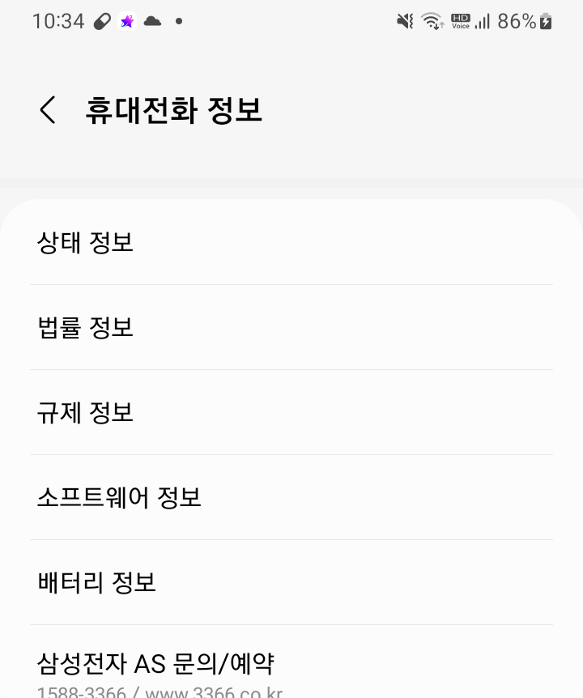
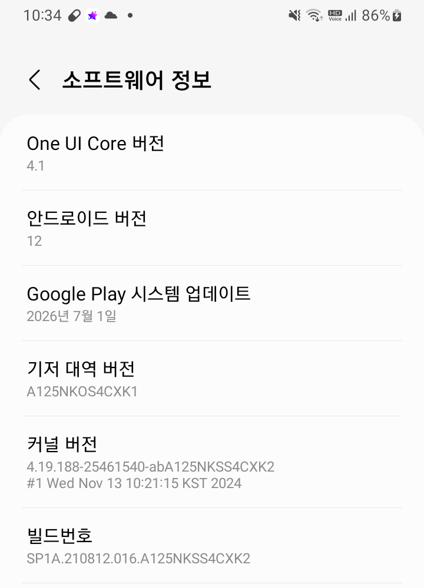
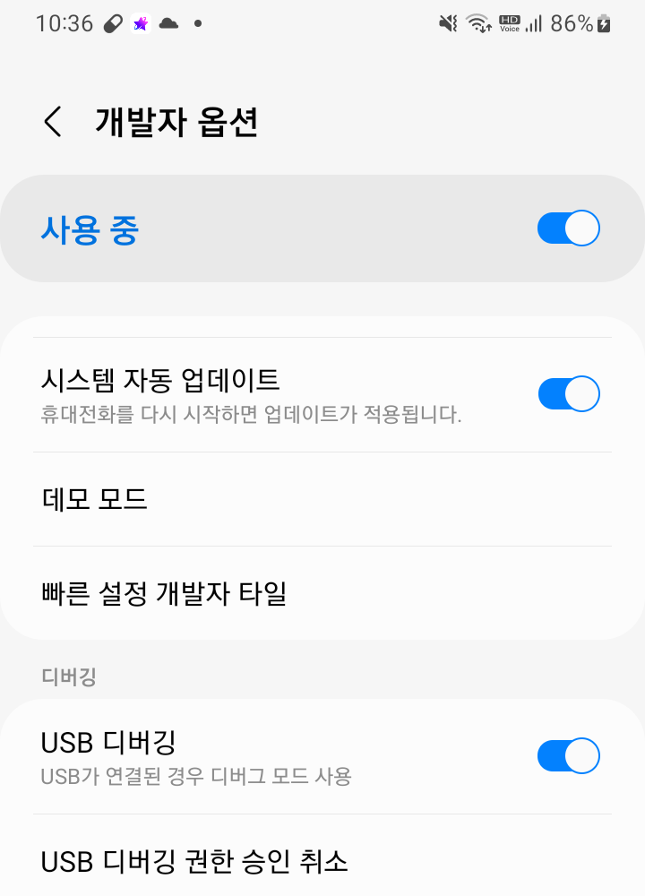
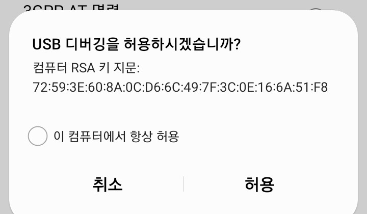

사용 설명서
5. 안드로이드 앱 매크로 연결하기 (USB 디버깅) 가장 어려운 부분
스타플래닛/셀럽챔프/K-탑스타는 PC가 실제 휴대폰 화면을 원격으로 조작합니다. 그러려면 휴대폰이 PC에 "이 기기를 조작해도 좋다"고 허락을 해줘야 하는데, 그 허락 절차가 바로 USB 디버깅 설정입니다. 순서대로 따라 하면 5분 이내로 끝납니다.
5-1. 케이블부터 확인하세요 — 가장 흔한 실패 원인
가장 중요
휴대폰 충전만 되고 컴퓨터에서는 인식이 안 되는 케이블이 정말 많습니다. "충전 전용"
케이블이 아니라 "데이터 전송"이 되는 케이블이어야 합니다. 원래 휴대폰 살 때 같이 온
정품 케이블이면 대부분 문제없고, 다이소에서 파는 케이블 중에도 포장에 "데이터 전송"
또는 "데이터 케이블"이라고 적힌 제품은 사용 가능합니다(저렴한 보조배터리용 충전 전용
케이블은 피해주세요). 휴대폰 단자가 C타입인지 5핀(구형)인지 먼저 확인하고 맞는 케이블을
고르시면 됩니다.
5-2. 휴대폰에서 "개발자 모드" 켜기
보통 휴대폰은 개발자용 설정 메뉴가 숨겨져 있습니다. 아래처럼 하면 나타납니다. (아래 스크린샷은 예시 화면이며, 기종에 따라 메뉴 이름이나 위치가 조금 다를 수 있습니다.)
-
휴대폰 설정 앱을 엽니다
-
휴대전화 정보 (또는 디바이스 정보)로 들어갑니다설정 화면을 맨 아래까지 내리면 보통 가장 아래쪽에 있습니다.
-
소프트웨어 정보로 들어갑니다

휴대전화 정보 → 소프트웨어 정보 
소프트웨어 정보 화면 (맨 아래쪽에 빌드번호가 있습니다) -
빌드번호를 빠르게 7~8번 연속으로 톡톡 눌러줍니다몇 번 누르면 "개발자 모드까지 n번 남았습니다" 같은 안내가 뜨고, 다 채우면 "개발자 모드가 켜졌습니다"라는 메시지가 나옵니다. (PIN이나 지문 확인을 요구하는 기종도 있습니다 - 화면 안내대로 인증하면 됩니다.)
5-3. USB 디버깅 켜기
-
설정으로 돌아가면 개발자 옵션 메뉴가 새로 생겨 있습니다기종에 따라 설정 > 추가 설정 > 개발자 옵션 또는 설정 > 개발자 옵션 위치에 있습니다.
-
개발자 옵션 안에서 USB 디버깅을 찾아 토글을 켭니다"USB 디버깅을 허용하시겠습니까?" 확인창이 뜨면 "확인"을 눌러주세요.

개발자 옵션 화면 - "디버깅" 항목 아래 USB 디버깅을 켜주세요
5-4. PC와 연결하고 허용하기
-
데이터 전송 케이블로 휴대폰과 PC를 연결합니다
-
휴대폰 화면에 "USB 디버깅을 허용하시겠습니까?" 팝업이 뜹니다"이 컴퓨터에서 항상 허용" 체크박스를 켠 뒤 "허용"을 누르세요. 체크를 안 하면 연결할 때마다 이 팝업이 다시 뜹니다.

이 팝업이 뜨면 "이 컴퓨터에서 항상 허용"을 꼭 체크한 뒤 "허용"을 누르세요 -
(필요 시) USB 연결 모드를 "파일 전송"으로 바꿉니다연결 직후 화면 위쪽 알림을 내려보면 USB 연결 방식을 고르는 항목이 있는 기종이 있습니다. 기본값이 "충전만"으로 되어 있으면 PC가 기기를 인식하지 못할 수 있으니 "파일 전송(MTP)"로 바꿔주세요.
여기까지 하셨다면
이제 프로그램에서 "⭐ 젤리"/"🏆 장미"/"🎫 티켓" 탭의 "시작"을 누르면 휴대폰을 자동으로 찾아
조작을 시작합니다. 화면이 저절로 움직이기 시작하면 정상적으로 연결된 것입니다.
5-5. 이후에는 이렇게 확인하세요
한 번 "항상 허용"으로 등록해두면, 다음부터는 케이블만 꽂으면 됩니다(USB 디버깅 토글도 특별히 끄지 않는 이상 계속 켜져 있습니다). 아래는 매번 확인하면 좋은 체크리스트입니다.
- 케이블이 완전히 꽂혀 있는지 (헐거우면 중간에 연결이 끊깁니다)
- 휴대폰 화면이 꺼져 있으면 한 번 켜서 잠금을 풀어주세요 (화면이 꺼진 채로는 조작이 잘 안 됩니다)
- 휴대폰에서 방금 "USB 디버깅 허용" 팝업이 다시 뜨진 않았는지 (기종에 따라 재부팅 후 다시 묻기도 합니다)
5-6. 휴대폰 여러 대로 동시에 돌리기 (v2.2.0부터)
휴대폰을 두 대 이상 연결하면 앱마다 다른 휴대폰으로 동시에 돌릴 수 있습니다. 예를 들어 스타플래닛은 1번 폰, K-탑스타는 2번 폰으로 돌리면 밤새 두 가지를 같이 끝낼 수 있습니다. 휴대폰마다 위 5-2~5-4를 한 번씩 해두세요.
- 젤리·장미·티켓 탭 왼쪽의 "사용할 휴대폰"에서 고릅니다. 연결된 휴대폰이 기종 이름과 일련번호 끝 4자리로 보입니다(같은 기종 두 대도 구분됩니다). 휴대폰을 새로 꽂았으면 옆의 ↻ 버튼을 누르세요.
- 자동으로 두면 다른 매크로가 쓰지 않는 휴대폰 중 그 앱이 깔린 휴대폰을 골라 씁니다. 카카오 로그인은 그 휴대폰의 카카오톡 계정을 쓰므로, 휴대폰마다 로그인된 계정이 다르면 직접 골라두는 것이 안전합니다.
- 각 탭의 "시작"을 누르면 동시에 돌고, "정지"도 탭마다 따로 됩니다. 한 창에서 같이 돌리면 로그 줄 앞에 앱 이름이 붙어 구분됩니다.
- 프로그램 창을 두 개 띄워 각각 돌려도 됩니다. 이미 다른 창이 쓰고 있는 휴대폰은 쓰지 않고, 로그 파일도 창마다 따로 생깁니다.
- 이미 쓰이고 있는 휴대폰을 고르고 시작하면 "선택한 휴대폰을 … 매크로가 쓰고 있습니다"라고 알려줍니다.
더 자세한 안내
- 메뉴 이름이나 위치가 위 사진과 다르다면 제조사별 USB 디버깅 켜는 법을 참고하세요. 삼성, 샤오미, 픽셀, LG의 위치와 제조사별로 추가로 켜야 하는 항목을 정리했습니다.
- 여기까지 했는데도 연결되지 않으면 휴대폰 연결이 안 될 때의 점검 순서를 따라가 보세요.